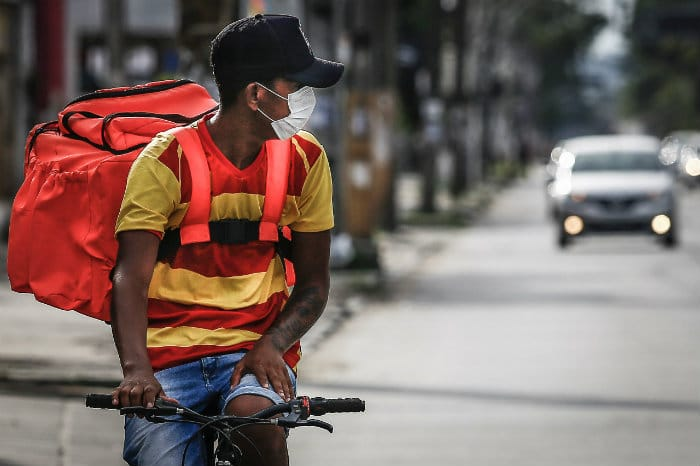

Durante a pandemia, muitas pessoas perderam o emprego e ficaram com a renda familiar muito apertada como consequência. Aqui nós vamos te dar algumas dicas para tentar mudar isso e te ajudar, colocando um sorriso no seu rosto por conseguir uma renda extra e comida na mesa da sua família. Aqui vão quatro dicas para te ajudar:
1 - Reduza gastos
Uma maneira que vai te ajudar a ter uma folga maior no seu orçamento e não deixar ele tão apertado é reduzir gastos. Todos nós sabemos que é muito gostoso comprar as “besteirinhas” que somam de cinco em cinco na fatura do cartão de crédito e acaba se tornando mil reais por mês.
Tente reduzir esses gatos que você verá uma mudança significativa na renda mensal, podendo até conferir se a situação é tão grave quanto pensa. Sempre se pergunte se você realmente precisa gastar seu dinheiro com isso ou se você só quer, é fundamental sabermos separar o que é essencial.
2 - Hora do desapego
Separe alguns objetos que estão conservados e que não usa mais. Sempre guardamos algo alegando que usaremos depois, mas na verdade só acumulamos. Sem perceber, você pode estar com o dinheiro parado de algum boleto que ia te salvar no mês. Por isso sempre verifique em sua casa o que você consegue vender. A forma de anúncio hoje em dia é muito fácil, pode ser pelo: Facebook, grupos no Whatsapp, Instagram e até mesmo em plataformas especializadas em vendas online como o Mercado Livre e a OLX.
3 – Fazer entregas
Os serviços de entregas são boas opções para ajudar a dar aquela aumentada no dinheiro. Com o avanço da tecnologia e desenvolvimento dos aplicativos, muitas pessoas começaram a preferir se alimentar, comprar objetos ou até mesmo contratar serviços pelos aplicativos. É nessa que você pode entrar pois o mercado de entregas é muito grande e sempre precisa de pessoas para realizar as mesmas. Por isso verifique os aplicativos que funcionam na sua região pois em alguns você nem precisa necessariamente ter uma moto ou um carro, pode fazer as entregas de bicicleta.
4 - Confeccionar máscaras
As máscaras de proteção contra a COVID-19, além de ser obrigatórios em todos os lugares, vem gerando um mercado interessante em relação a criação e confecção. Algumas pessoas preferem as descartáveis e outras as de pano.
Por isso, você consegue criar sua própria empresa na sala da sua casa. Com pouco dinheiro é possível comprar tecidos diferentes e começar a confeccionar as mesmas. Mesmo sendo um item de proteção, as máscaras se tornaram um acessório de moda para muitas pessoas que sempre combinam as máscaras com a roupa. Sendo assim, se você for começar a fazer máscaras, tente fazer elas com tecidos diferentes para te ajudar a ter um maior número de vendas.